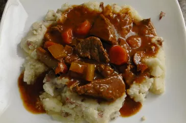

Beef and Guinness Stew

Description
This Guinness beef stew is a very simple dish, but at the same time, it has a deep, complex, rich flavor. The maltiness of dark beer really does amazing things for the gravy. I served this in a nice ring of green onion-mashed potatoes.
Ingredients
- Bacon
- Beef
- Beer
- Seasonings and herbs
- vegetables
- Stock
- Tomato paste
- Mashed potatoes
Steps
- Cook the bacon. Transfer the bacon to a stew pot, but leave the fat in the skillet.
- Cook the beef cubes in the fat. Place the browned beef in the stew pot.
- Cook the onions and garlic in the fat. Pour the beer in and stir.
- Transfer the contents of the skillet to the pot. Add the remaining ingredients.
- Simmer until the meat is tender, then bring to a boil.
- Serve in bowls or over mashed potatoes.